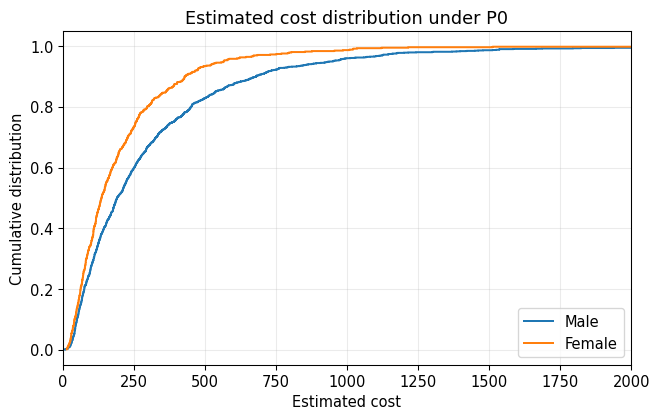
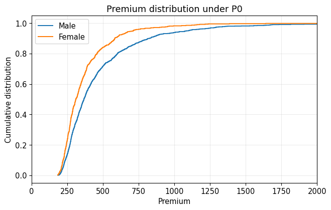
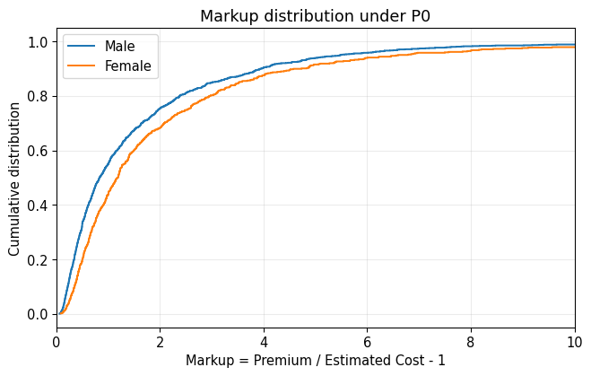
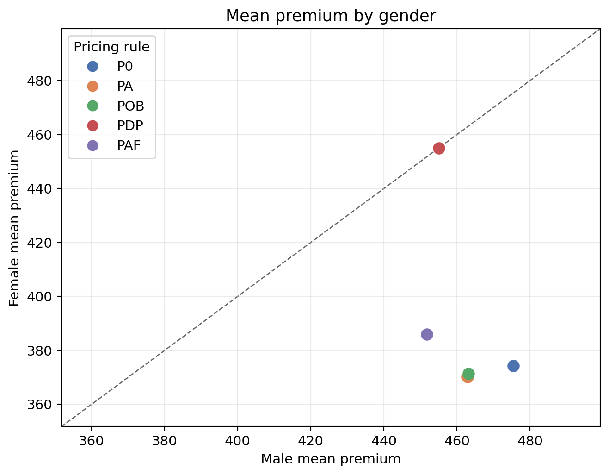
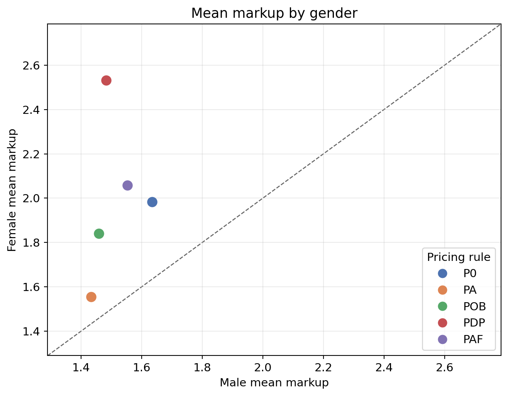
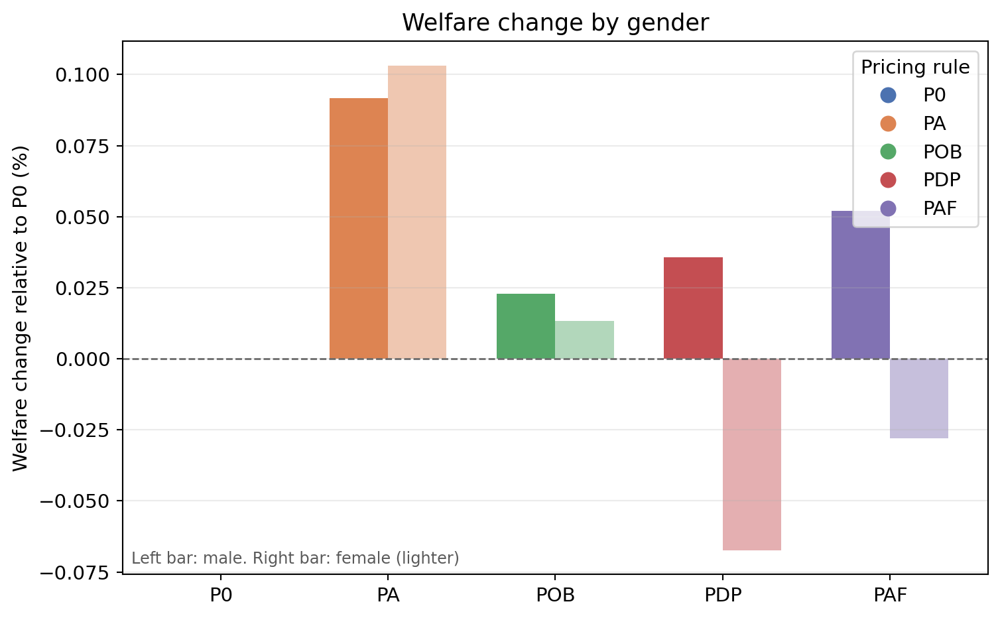

Case Study 2: Welfare Implications of Fair Insurance Pricing
A practical framework for fair algorithmic pricing
Author
Fei Huang
Published
June 11, 2026
Before you start
Read Step 3: Assess impact first for the qualitative framework. Case Study 1 covers fair models at the cost stage. This case study extends the pipeline to welfare and price optimisation.
Background
In Case Study 1, the focus was on fairness in cost modelling: how insurers estimate expected claim costs under different fairness constraints. This case study moves one step further along the insurance pricing pipeline. Even after expected costs have been estimated, insurers still need to convert those cost estimates into premiums.
In practice, premiums are not determined solely by expected claim costs. Insurers may also account for consumer demand, price sensitivity, and regulatory constraints when setting prices. As a result, fairness in cost modelling does not necessarily translate into fairness in final premiums, and fairness in premiums does not necessarily imply favourable welfare outcomes for consumers.
This case study is based on Huang and Shimao (2026). It extends the cost-modelling focus of Xin and Huang (2024) (Case Study 1) to the full pricing pipeline. The paper develops an empirical framework for evaluating fair and accountable insurance pricing by modelling the complete pricing process, including cost modelling, demand modelling, price optimisation, consumer welfare, and insurer profit. It shows that different pricing regulations can create a fundamental tension between fairness in premiums and fairness in markups. Policies that reduce one type of disparity may amplify another, and regulations that appear favourable under fairness metrics may impose profit losses or produce market-dependent welfare effects.
Using French motor insurance data, this case study illustrates how alternative pricing regulations affect premiums, markups, consumer welfare, and insurer profit. The main aim is to understand why pricing regulations should be evaluated not only by whether they satisfy a fairness criterion, but also by how they affect consumers and insurers once demand responses and pricing behaviour are taken into account.
The analysis is designed for policy evaluation. It shows what can happen when different regulatory constraints are applied, not what every insurer should implement in every market.
How to Read This Case Study
Not every section is needed for every reader. The table below suggests a practical reading order.
The code chunks load pre-computed results. You can follow the narrative and figures without running the optimisation yourself.
Insurance Pricing and Welfare Framework
The framework considered in Huang and Shimao (2026) links four components of insurance pricing:
The insurer first estimates the expected claim cost \hat{c}_i for each policyholder i. A pricing rule is then used to convert these cost estimates into premiums p_i. Consumers decide whether to purchase insurance based on the offered price and their valuation of coverage. Finally, the pricing rule is evaluated using both consumer welfare W_i and insurer profit \Pi. Main symbols are defined in Notation.
This framework extends traditional actuarial pricing by explicitly incorporating consumer demand and welfare considerations into the evaluation of pricing regulations. As a result, pricing regulations can be assessed not only by their impact on premiums and markups, but also by their broader effects on consumers and insurers.
For practitioners
The cost modelling, demand modelling, and price optimisation steps shown here are a standard illustrative example from Huang and Shimao (2026). In practice, you should choose methods that fit your jurisdiction, product, data quality, and market conditions not adopt this pipeline by default.
Cost modelling. frequency–severity models (here, XGBoost with Poisson and gamma deviance) are one common approach. GLMs and other actuarial methods may be preferred where interpretability, filing requirements, or governance rules require them.
Demand modelling. The discrete-choice setup is useful for welfare analysis. Many pricing teams use simpler elasticity or conversion models, or may not use an explicit demand model where regulation requires cost-based pricing.
Price optimisation. Setting prices to maximise profit using demand information is restricted or prohibited in some jurisdictions (for example, under price optimisation bans in parts of the United States). We include this step here for policy analysis: to compare how alternative pricing rules affect premiums, markups, welfare, and profit. It is not a recommendation that every firm should optimise prices in every market.
Claim cost vs commercial premium. As in Xin and Huang (2024) and Huang and Shimao (2026), \hat{c}_i and p_i here refer to expected claim cost (pure premium / technical price), not a filed commercial rate. In practice, insurers add expense loadings, cost of capital, reinsurance charges, profit margin, and other components when setting prices. Fairness at the technical stage does not automatically guarantee fairness in final rates unless those loadings are applied consistently across groups. A complete fair-pricing review should cover both technical rating and office-premium construction.
The practical takeaway is to evaluate regulatory options and their consequences. The technical choices in this case study are inputs to that comparison, not a universal pricing manual.
The original paper considers both an uninsured outside option and several competitive outside-option settings. To keep the analysis concise and focused on the main ideas, this case study considers the uninsured setting, in which consumers may either purchase the offered insurance policy or remain uninsured. Interested readers may explore competitive settings using the supporting materials in the appendix.
Scope of this case study
French motor data (pg15training family), gender as protected attribute
Uninsured outside option (voluntary insurance)
Cost model C0 (unconstrained) with pricing rules P0, PA, POB, PDP, PAF
Expected claim cost only premiums and markups are built from predicted claim costs. Expense loadings, cost of capital, reinsurance, and profit margin are not modelled separately (as in Huang and Shimao (2026) and Xin and Huang (2024))
Pre-computed optimisation outputs for interpretation
Cost modelling follows the paper on the full 100,000-policy dataset. Welfare analysis uses a 2,000-policyholder subsample because the price optimisation is slow at full scale.
Notation
The tables below define the main symbols used in this case study. Rule abbreviations (P0, PA, and so on) are introduced again with equations in Pricing rules.
Policyholders, costs, and prices
Symbol
Meaning
i
Policyholder (consumer) index, i = 1, \ldots, n
j
Insurance product index (j = 0 for the insurer’s product in the single-product setting)
\hat{c}_i
Insurer’s estimated marginal claim cost (pure premium / technical price) for policyholder i. Excludes expense, capital, reinsurance, and profit loadings
p_i
Premium offered to policyholder i (derived from \hat{c}_i under a pricing rule. Still a technical price in this illustration)
d_j
Deductible for product j (set to 0 for full coverage in this case study)
s_i
Protected attribute (gender): s_i = 0 for male, s_i = 1 for female
s^{\prime}
Another level of the protected attribute (used when comparing groups)
g
Cost stratum index for PAF (four quartile groups based on \hat{c}_i)
\mathrm{Markup}_i
Markup for policyholder i: p_i / \hat{c}_i - 1
Demand and preferences
Symbol
Meaning
Q_i(p_i)
Probability that policyholder i purchases the insurer’s product at premium p_i
v_{ij}
Ex-ante value of product j for policyholder i
h_i(C_i, j)
Realised utility component (premium, switching cost, and out-of-pocket loss)
C_i
Sequence of accident losses for policyholder i
\mathrm{oop}(C_i, d_j)
Total out-of-pocket payment given losses C_i and deductible d_j
1_{ij}
Indicator equal to 1 if product j differs from the status quo
\gamma_i
Coefficient of absolute risk aversion for policyholder i
\eta_i
Product inertia (switching cost) for policyholder i
\sigma
Logit scale parameter (logit_sigma= 39.213)
\mathrm{E}[\cdot]
Expectation over accident outcomes
Welfare and profit
Symbol
Meaning
\Pi
Total insurer expected profit
\mathrm{CE}_{ij}
Certainty equivalence of product j for policyholder i
\mathrm{CE}^{\mathrm{purchase}}_{i}
Certainty equivalence if policyholder i purchases
\mathrm{CE}^{\mathrm{outside}}_{i}
Certainty equivalence of the outside option
W_i
Ex-ante welfare for policyholder i
Pricing-rule and model labels
Label
Meaning
P0
Unconstrained pricing (profit maximisation, no fairness constraint)
Price optimisation ban (premium linear in \hat{c}_i)
PDP
Demographic parity (equal average premium across gender groups)
PAF
Actuarial group fairness (equal average premium across gender groups within each cost stratum)
C0
Unconstrained cost model (no fairness constraint at the cost stage)
\varepsilon
Numerical tolerance for fairness constraints (0.01 in the implementation)
B, f_s, \beta_k, X_{ik}
Base rate, relativities, rating coefficients, and consumer features in PA
Price Optimisation Details
This section describes one way to link cost estimates, consumer demand, and regulatory constraints into final premiums. As noted above, price optimisation is included for policy analysis, not because it is permitted or appropriate in every jurisdiction.
The empirical results in this case study are based on pre-computed optimisation outputs. This is because the original price optimisation problem is computationally intensive. Depending on the pricing rule being considered, the optimisation may involve thousands of pricing parameters, fairness constraints, or non-convex objective functions. Re-running the full optimisation therefore requires substantially more computation than is appropriate for a teaching case study.
This section explains how the optimisation outputs were obtained in the illustrative workflow. The code chunks are provided for transparency, but they are not executed in this case study. Readers who wish to re-run the optimisation can refer to welfare_analysis_french.py and utils.py in the appendix. For data sources, parameter values, formal pricing-rule definitions, and welfare measurement, see How the empirical market was constructed.
Inputs to the optimisation
The first input to the pricing optimisation is an estimate of the expected claim cost for each policyholder. These cost estimates are obtained from the cost modelling stage and represent the insurer’s estimate of the marginal cost of providing coverage.
In this case study, claim frequency and claim severity are modelled separately using XGBoost. That is one standard actuarial approach. Your own cost models should follow filing rules, data availability, and model-risk standards in your market. Poisson deviance loss is used for claim frequency, while Gamma deviance loss is used for claim severity. The fitted models are then used to simulate claim outcomes and estimate the expected claim cost for each policyholder. These estimated costs serve as the cost inputs to the pricing optimisation.
Show cost model input sketch
# Sketch only.## Corresponding original functions:# - utils.py: sample_accidents()# - utils.py: loss_to_expected_claim()# Policyholder-level frequency and severity model parameters.loss_sample_cost_model = sample_accidents( alpha_cost_model, beta_cost_model, lambda_cost_model, n_sample=3000)# Estimated claim cost for each policyholder.estimated_cost = loss_to_expected_claim( loss_sample=loss_sample_cost_model)
The resulting estimated_cost vector contains one estimated claim cost for each policyholder and forms the primary cost input to the pricing optimisation. The next section introduces the demand model, which determines how consumers respond to the premiums offered by the insurer.
Demand model
The demand model describes how consumers respond to the premium offered by the insurer. Each consumer chooses between the insurer’s product and an outside option. The purchase probability is modelled using a discrete-choice framework, where the probability of choosing the insurer’s product depends on its value relative to the value of the outside option.
This demand specification is a research example for welfare measurement. In practice, you may use a different demand model, or omit explicit demand modelling where regulation requires premiums to follow cost-based rules (as under POB in this case study, or under price optimisation bans in some jurisdictions).
The value of an insurance product depends on the premium, the out-of-pocket losses borne by the consumer, and the consumer’s risk aversion. Following Cohen and Einav (2007) and Jin and Vasserman (2021), insurance values are approximated using a mean-variance representation of expected utility and are then translated into purchase probabilities through the discrete-choice framework. The original implementation computes this through loss_to_value_j() and choice_prob() in utils.py, with TensorFlow-based counterparts in welfare_analysis_french.py.
The following code is a simplified sketch of the demand calculation. It is not copied directly from the original scripts, but it follows the same calculation in the single-product setting considered in this case study. The teaching sketch omits product inertia \eta_i (switching cost. See Notation). The full implementation in construct_outside_option() subtracts \eta_i from the outside-option value when flag_inertia=True, using coefficients from Jin and Vasserman (2021). See How the empirical market was constructed for the complete demand setup.
Show demand model sketch
# Corresponding original functions:# - utils.py: loss_to_total_oop()# - utils.py: loss_to_value_j()# - utils.py: choice_prob()# - welfare_analysis_french.py: PriceOptimizationProblem.loss_to_value_j_tf()# - welfare_analysis_french.py: PriceOptimizationProblem.choice_prob_tf()def product_value(price, deductible, loss_sample, u_intercept, u_price_coeff, risk_gamma):"""Compute the deterministic value of an insurance product.""" total_oop = loss_to_total_oop(deductible, loss_sample) h = ( u_intercept- u_price_coeff * price- total_oop ) value = h.mean(axis=0) - (risk_gamma /2) * (h **2).mean(axis=0)return valuedef choice_probability_single_product(value_product, value_outside, logit_sigma):"""Compute purchase probabilities in the single-product setting.""" numerator = np.exp(value_product / logit_sigma) denominator = numerator + np.exp(value_outside / logit_sigma)return numerator / denominator
In this sketch, price is the premium charged by the insurer, deductible determines the consumer’s out-of-pocket losses, and loss_sample contains simulated claim outcomes. The parameter risk_gamma is the coefficient of absolute risk aversion. The terms u_intercept and u_price_coeff are consumer-level utility parameters used to construct the deterministic component of utility. The parameter logit_sigma controls how strongly consumers respond to differences between the value of the insurer’s product and the value of the outside option.
In the uninsured outside-option setting, a consumer who does not purchase the insurer’s product pays no premium but bears all losses out of pocket. This corresponds to the voluntary insurance scenario considered in the paper. In the implementation, this outside option is constructed using zero premium and an infinite deductible.
The resulting value_outside is compared with the value of the insurer’s product when computing the purchase probability. This is how the uninsured outside-option setting enters the demand calculation: consumers choose between buying the insurer’s product and remaining uninsured.
Pricing rules
The notation below follows Notation. The insurer chooses premiums to maximise expected profit, subject to the pricing rule being considered. Different pricing rules restrict how premiums may be determined and therefore lead to different optimisation problems. Rules such as POB (price linked to cost) and PA (accountable rating structure) are closer to how many regulated markets operate. P0 (unconstrained optimisation) is included mainly as a benchmark for policy comparison.
Each rule maximises aggregate expected profit
\sum_i Q_i(p_i)\left(p_i - \hat{c}_i\right)
subject to the rule-specific restriction below. In the result files, scenarios are labelled {cost_model}-{price_model} (for example, C0-PDP).
P0 (unconstrained pricing). One premium per policyholder:
Estimated costs are split into four quartile groups for PAF (highest risk above the 75th percentile down to lowest risk at or below the 25th percentile). Demographic parity in average premium is enforced within each stratum.
Rule
Description
Regulatory interpretation
P0
Unconstrained pricing
The insurer sets individualised premiums to maximise expected profit.
PA
Accountable pricing
Premiums must follow an interpretable multiplicative rating structure.
POB
Price optimisation ban
Premiums must be determined as a linear function of estimated cost.
PDP
Pricing with demographic parity
Average premiums must be equal across gender groups.
PAF
Pricing with actuarial group fairness
Average premiums must be equal across gender groups within estimated-cost strata.
The illustrative implementation generates premiums from a vector of optimisation parameters. A simplified sketch is shown below.
Show pricing rule sketch
# Corresponding original function:# - welfare_analysis_french.py:# PriceOptimizationProblem.gen_price()def generate_price(parameters, rule):"""Illustrative pricing-rule sketch."""if rule =="P0":# One premium can be chosen for each policyholder. price = individual_prices(parameters)elif rule =="PA":# Premiums must follow an actuarial rating structure. price = rating_formula(parameters)elif rule =="POB":# Premiums must be linked directly to estimated cost. price = cost_based_formula(parameters)elif rule in ["PDP", "PAF"]:# Individualised premiums are retained,# but additional fairness constraints apply. price = individual_prices(parameters)return price
Some rules permit highly flexible individualised pricing, while others require premiums to follow a structured rating formula or satisfy fairness constraints. These restrictions ultimately affect premiums, markups, consumer welfare, and insurer profitability.
Objective function
For policyholder i, expected profit is the probability of purchase multiplied by the price-cost margin:
Q_i(p_i)\left(p_i - \hat{c}_i\right).
Where Q_i(p_i) is the probability that policyholder i purchases the insurer’s product when offered premium p_i, p_i is the premium, and \hat{c}_i is the estimated marginal cost. The insurer’s objective is to maximise the sum of expected profits across all policyholders.
Some pricing rules introduce additional fairness requirements. In the optimisation framework, these requirements are incorporated through penalty terms that reduce the objective value when the relevant fairness condition is violated.
The following code illustrates the basic structure of the optimisation objective.
The exact form of the fairness penalty depends on the pricing rule being considered. Some rules impose no additional restrictions, while others penalise disparities according to a specified fairness criterion. The detailed definitions of the pricing rules are introduced in the next section.
Optimisation loop
The optimisation problem is solved numerically using gradient-based methods. This is necessary because the objective function depends on consumer demand, purchase probabilities, and pricing constraints, which generally lead to a high-dimensional and non-convex optimisation problem.
The implementation uses TensorFlow together with the Adam optimiser (Kingma and Ba 2014) to update the pricing parameters iteratively. The simplified structure is shown below.
Show optimisation loop sketch
# Corresponding original components:# - welfare_analysis_french.py:# PriceOptimizationProblem.gen_price()# PriceOptimizationProblem.objective()x = initial_guess(rule)optimizer = tf.keras.optimizers.legacy.Adam( learning_rate=learning_rate)for epoch inrange(n_iter):with tf.GradientTape() as tape: price = problem.gen_price() loss = problem.objective()# Negative expected profit plus any fairness penalty. gradient = tape.gradient(loss, [problem.x]) optimizer.apply_gradients(zip(gradient, [problem.x]) )if convergence_criterion_met:break
After optimisation, the resulting premiums are used to compute purchase probabilities, consumer welfare, and insurer profit. These outputs are stored in the pre-computed files used throughout the remainder of this case study.
How the Empirical Market Was Constructed
This section documents how the pre-computed outputs were built in Huang and Shimao (2026). It records the data, parameters, and file mapping used in the bundled results. Treat it as a transparent description of one worked example, not a checklist every practitioner must follow. Adapt cost models, demand assumptions, and pricing steps to your jurisdiction and business context.
Data and sample
Source. French private motor insurance data from the CASdatasets package (pg15training family), as in Huang and Shimao (2026).
Protected attribute. Gender (coded as s = 0 for male, s = 1 for female in the implementation).
Sample sizes. Cost modelling uses the full 100,000-policy dataset analysed in the paper. Welfare analysis uses a 2,000-policyholder subsample because the price optimisation is slow at full scale. The bundled CSVs contain 2,000 policyholders.
Traditional rating variables in French_individual_traditional.csv: Age.ct, Bonus, Density, GroupOne, Insurancescore, and a Gender dummy (plus intercept). These enter the accountable pricing rule (PA).
Stage 1: Cost modelling
The insurer estimates expected claim cost \hat{c}_i for each policyholder before pricing. The frequency–severity XGBoost setup below is the case study’s chosen example. Other valid approaches include GLMs, credibility models, or fairness-constrained cost models (as in Case Study 1).
Frequency is modelled with Poisson regression (Poisson deviance loss for XGBoost).
Severity is modelled with gamma regression (gamma deviance loss for XGBoost).
Simulation. Accident sequences are drawn from the compound Poisson–gamma model via sample_accidents(). Expected cost is loss_to_expected_claim(d=0,...).
In the bundled case study, cost models are pre-fit. The script read_cost_results() merges stored frequency and severity parameters (lambda_*, alpha_*, beta_*) from the cost-modelling pipeline. The label C0 denotes an unconstrained cost model: no fairness constraint at the cost stage. With C0, the firm uses model M1_telem0_xgb for marginal cost \hat{c}_i.
Result files name each scenario {cost_model}-{price_model} (for example, C0-P0 = unconstrained cost + unconstrained pricing).
Stage 2: Consumer and demand construction
Consumers are built in construct_consumers() and construct_outside_option() (utils.py). Risk-aversion and inertia parameters are drawn from published demand studies. In applied work, you would calibrate or validate demand assumptions against your own market data where possible.
Risk beliefs
Consumers form beliefs about accident risk using parameters from an unconstrained cost model (M1_telem0_xgb in welfare_analysis_french.py). Accident sequences for demand (loss_sample_consumer) are simulated with n_sample = 3000 draws per policyholder.
Risk aversion \gamma_i
Following Cohen and Einav (2007), heterogeneity in absolute risk aversion is mapped from observables via compute_CE_risk_gamma(). For the French data, the overlapping variables are age, age squared, and a young-driver indicator. Coefficients (from Cohen–Einav, Table 4) are:
Variable
Coefficient on log-risk-aversion
Age
−0.0623
Age squared
0.000644
Below 25
−0.2499
Female
0.2049
The intercept is scaled so that the median of log-risk-aversion matches the Cohen–Einav median (2.6 \times 10^{-5}).
Product inertia \eta_i
Following Jin and Vasserman (2021), switching cost \eta_i is computed in compute_JV_eta() from age, gender, density, and related variables, then linearly rescaled to the range [158, 407] reported in Jin–Vasserman (Table 5). Inertia enters the outside-option value: consumers who would switch away from the status quo incur utility cost \eta_i.
where 1_{ij} equals 1 if product j differs from the status quo, and \mathrm{oop}(C_i, d_j) is total out-of-pocket payment given deductible d_j. The ex-ante value is approximated by
Under the uninsured setting, the outside option is no insurance: premium 0, deductible \infty (construct_outside_option(option="uninsured")). Coverage is voluntary full insurance with d = 0.
Stage 3: Pricing rules in the outputs
Formal definitions of P0, PA, POB, PDP, and PAF are in Pricing rules. In the bundled CSVs, each scenario is labelled {cost_model}-{price_model} (for example, C0-PDP = unconstrained cost model with demographic-parity pricing). The penalty weight for PDP and PAF is 10^{3} in gen_model().
Stage 4: Numerical optimisation
Solver. TensorFlow + Adam (Kingma and Ba 2014), class PriceOptimizationProblem in welfare_analysis_french.py.
Iterations. up to n_iter = 3000 with exponential learning-rate decay (rule-specific initial rates: higher for P0/PDP/PAF/POB, lower for PA).
Initial prices. P0 starts at 1.5\hat{c}_i. PA from regression of \log(1.5\hat{c}_i) on features. POB from regressing P0 prices on costs. PDP and PAF from P0 prices adjusted to satisfy their fairness constraints.
Convergence. Objective stability and constraint satisfaction (group-level tolerance 0.01 for PDP and PAF), following the numerical setup in Huang and Shimao (2026).
Stage 5: Welfare and profit
Welfare symbols (\mathrm{CE}_{ij}, W_i, \Pi) are defined in Notation.
The summary file reports portfolio means welfare, welfare0 (male), and welfare1 (female). Markup is
\mathrm{Markup}_i = \frac{p_i}{\hat{c}_i} - 1.
Data and Pre-computed Outputs
The empirical exercise uses French motor insurance data from the pg15training family. Gender is treated as the protected attribute throughout the analysis. As noted above, cost modelling is based on the 100,000-policy dataset analysed in the paper. Welfare analysis uses a 2,000-policyholder subsample because the price optimisation is slow at full scale.
The original optimisation procedure produces both model-level and individual-level outputs. To keep the case study computationally accessible, we work directly with these pre-computed outputs rather than re-running the full price optimisation. Practitioners can work from the summary tables and figures below to discuss regulatory trade-offs without implementing the full pipeline.
In the result files, each model is labelled {cost_model}-{price_model}. Here C0 is the unconstrained cost model and P0, PA, POB, PDP, and PAF are the pricing rules defined above.
Show data loading code
import numpy as npimport pandas as pdimport matplotlib.pyplot as pltplt.rcParams.update({"font.size": 11})# Load the traditional variables used in the empirical exercise.traditional = pd.read_csv("French_individual_traditional.csv", index_col=0)# Load model-level optimisation outputs.summary = pd.read_csv("welfare_result_summary.csv")# Load policyholder-level optimisation outputs.individual = pd.read_csv("welfare_result_individual.csv")summary = summary.set_index("model")print("Traditional variables:", traditional.shape)print("Model summary:", summary.shape)print("Individual results:", individual.shape)
Traditional variables: (2000, 7)
Model summary: (5, 15)
Individual results: (2000, 34)
The traditional dataset contains the explanatory variables used in the pricing exercise.
Show traditional data preview
traditional.head()
Age.ct
Bonus
Density
GroupOne
Insurancescore
Gender_Male
constant
29
41
16
272.966995
10
0.148786
False
1.0
31
25
10
190.051565
3
0.295464
True
1.0
41
29
9
225.043089
17
0.255107
False
1.0
45
47
8
129.419475
17
0.110062
True
1.0
46
47
5
290.132719
11
0.149420
False
1.0
The optimisation outputs are stored in two files:
welfare_result_summary.csv, which contains model-level results such as premiums, coverage rates, welfare measures, and profit
welfare_result_individual.csv, which contains policyholder-level outcomes under each pricing rule.
The individual-level output contains premiums, purchase probabilities, welfare measures, and other quantities for each policyholder under the different pricing rules.
Show individual-level output preview
individual.head()
Unnamed: 0
s
eta_consumer
C0-P0_estimated_cost
C0-P0_risk_group
C0-P0_price
C0-P0_coverage
C0-P0_ce_outside
ce_no_insurance
C0-P0_welfare
...
C0-PDP_price
C0-PDP_coverage
C0-PDP_ce_outside
C0-PDP_welfare
C0-PAF_estimated_cost
C0-PAF_risk_group
C0-PAF_price
C0-PAF_coverage
C0-PAF_ce_outside
C0-PAF_welfare
0
29
1
220.265157
311.79520
1
476.21002
0.764436
-38700.277
-38480.023
-38665.440
...
500.24252
0.635603
-38700.277
-38686.594
303.585420
1
478.42755
0.753966
-38700.277
-38667.594
1
31
0
177.694105
449.08963
0
581.57040
0.708959
-34754.640
-34576.970
-34730.316
...
566.00867
0.784801
-34754.640
-34715.500
450.199620
0
541.60345
0.872846
-34754.640
-34689.810
2
41
1
185.431039
266.11813
1
417.21094
0.743901
-31509.309
-31323.900
-31478.635
...
445.10153
0.585513
-31509.309
-31501.492
264.498300
1
420.89580
0.725363
-31509.309
-31482.070
3
45
0
251.872912
128.03308
2
322.31827
0.799504
-48846.220
-48594.348
-48803.168
...
308.24220
0.851239
-48846.220
-48788.400
133.144010
2
318.87692
0.813288
-48846.220
-48799.625
4
46
1
242.811967
115.82938
2
309.24957
0.798844
-39852.633
-39609.824
-39809.797
...
334.71774
0.673553
-39852.633
-39833.670
119.464386
2
316.68930
0.766366
-39852.633
-39817.240
5 rows × 34 columns
In the result files, group 0 corresponds to male policyholders (s_i = 0) and group 1 corresponds to female policyholders (s_i = 1), as defined in Notation.
Baseline Outcomes Under Unconstrained Pricing
We begin by examining the unconstrained pricing rule (P0), which serves as the benchmark for the subsequent comparisons. The distributions of estimated cost, premium, and markup provide useful insight into the relationship between risk, pricing, and consumer outcomes under profit-maximising pricing.
These distributions also illustrate one of the central themes of this case study: fairness in prices and fairness in markups may lead to very different conclusions.
Show baseline data preparation
# Merge individual-level results with the traditional variables.df = individual.merge( traditional, left_index=True, right_index=True, how="left")# In the original implementation:# s = 0 (Male), s = 1 (Female)df["gender"] = np.where(df["s"] ==0, "Male", "Female")# C0 = unconstrained cost model; P0 = unconstrained pricing (benchmark).base_model ="C0-P0"df["baseline_cost"] = df[f"{base_model}_estimated_cost"]df["baseline_price"] = df[f"{base_model}_price"]df["baseline_markup"] = ( df["baseline_price"] / df["baseline_cost"] -1)models = ["C0-P0", "C0-PA", "C0-POB", "C0-PDP", "C0-PAF"]model_labels = {"C0-P0": "P0","C0-PA": "PA","C0-POB": "POB","C0-PDP": "PDP","C0-PAF": "PAF",}rule_colors = {"C0-P0": "#4C72B0","C0-PA": "#DD8452","C0-POB": "#55A868","C0-PDP": "#C44E52","C0-PAF": "#8172B3",}
The following helper function produces empirical cumulative distribution plots, which are used throughout this section to compare the distributions of estimated costs, premiums, and markups across groups.
plot_ecdf_by_gender( df,"baseline_cost", xlabel="Estimated cost", title="Estimated cost distribution under P0", xlim=(0, 2000))plt.show()

Figure 1: Cumulative distribution of estimated costs under unconstrained pricing.
Female policyholders have lower estimated costs on average than male policyholders. Since these estimates are generated before the pricing stage, the observed differences reflect the underlying cost model rather than any pricing regulation.
Premium Distribution
Show code for premium distribution
plot_ecdf_by_gender( df,"baseline_price", xlabel="Premium", title="Premium distribution under P0", xlim=(0, 2000))plt.show()

Figure 2: Cumulative distribution of premiums under unconstrained pricing.
Because female policyholders have lower estimated costs on average, they also tend to receive lower premiums under unconstrained pricing.
Markup Distribution
Show code for markup distribution
plot_ecdf_by_gender( df,"baseline_markup", xlabel="Markup = Premium / Estimated Cost - 1", title="Markup distribution under P0", xlim=(0, 10))plt.show()

Figure 3: Cumulative distribution of markups under unconstrained pricing.
The markup distribution tells a different story. Although female policyholders pay lower premiums on average, they are charged higher markups relative to their estimated costs. In other words, the insurer extracts more profit from female policyholders despite charging them lower prices overall.
This contrast between the premium distribution and the markup distribution highlights one of the central findings of Huang and Shimao (2026). A policy that appears fair when evaluated using premiums may lead to a very different conclusion when evaluated using markups. This tension motivates the remainder of the case study, where we examine how different pricing regulations affect premiums, markups, welfare, and profit.
Pricing Regulations
The case study compares five pricing rules considered in Huang and Shimao (2026). Their formal definitions, equations, and regulatory interpretation are in Pricing rules.
Among these regulations, PDP and PAF are the two rules that explicitly incorporate fairness considerations with respect to the protected attribute. PDP targets equality in average premiums across gender groups over the portfolio. PAF imposes the same equality within each of four cost quartiles (risk groups defined by the 25th, 50th, and 75th percentiles of \hat{c}_i), so fairness is conditional on estimated cost rather than unconditional across the portfolio.
As we will see below, these alternative notions of fairness can lead to very different outcomes in terms of premiums, markups, welfare, and insurer profit.
Preparing Regulation-level Summaries
The following code prepares a regulation-level summary from the pre-computed optimisation outputs. The resulting table contains the key quantities used throughout the remainder of the case study, including mean premiums, mean markups, welfare changes, and profit changes under alternative pricing regulations.
Show regulation summary preparation
reg_summary = summary.loc[models].copy()# Changes relative to the unconstrained pricing benchmark P0.benchmark ="C0-P0"# Absolute welfare changes.reg_summary["welfare_change_male"] = ( reg_summary["welfare0"] - reg_summary.loc[benchmark, "welfare0"])reg_summary["welfare_change_female"] = ( reg_summary["welfare1"] - reg_summary.loc[benchmark, "welfare1"])reg_summary["welfare_change"] = ( reg_summary["welfare"] - reg_summary.loc[benchmark, "welfare"])# Relative welfare changes.# Use absolute benchmark welfare in the denominator because the welfare# levels can be negative.reg_summary["welfare_change_male_ratio"] = ( reg_summary["welfare_change_male"]/abs(reg_summary.loc[benchmark, "welfare0"]))reg_summary["welfare_change_female_ratio"] = ( reg_summary["welfare_change_female"]/abs(reg_summary.loc[benchmark, "welfare1"]))reg_summary["welfare_change_ratio"] = ( reg_summary["welfare_change"]/abs(reg_summary.loc[benchmark, "welfare"]))# Relative profit change.reg_summary["profit_change_ratio"] = ( reg_summary["profit"] / reg_summary.loc[benchmark, "profit"] -1)reg_summary["welfare_change_pct"] = reg_summary["welfare_change_ratio"] *100reg_summary["profit_change_pct"] = reg_summary["profit_change_ratio"] *100# Compute mean markups directly from individual-level outputs.for model in models: price_col =f"{model}_price" cost_col =f"{model}_estimated_cost" markup = df[price_col] / df[cost_col] -1 reg_summary.loc[model, "mean_markup_male"] = ( markup.loc[df["s"] ==0].mean() ) reg_summary.loc[model, "mean_markup_female"] = ( markup.loc[df["s"] ==1].mean() ) reg_summary.loc[model, "mean_markup_ratio_female_to_male"] = ( reg_summary.loc[model, "mean_markup_female"]/ reg_summary.loc[model, "mean_markup_male"] )reg_summary["label"] = [ model_labels[m] for m in reg_summary.index]def pricing_rule_legend_handles():"""Legend markers with one color per pricing rule."""return [ plt.Line2D( [0], [0], marker="o", color="w", markerfacecolor=rule_colors[model], markeredgecolor=rule_colors[model], markersize=8, label=model_labels[model], )for model in models ]def add_pricing_rule_legend(ax, loc="best"): ax.legend( handles=pricing_rule_legend_handles(), title="Pricing rule", loc=loc, frameon=True, )def scatter_pricing_rules(ax, x_col, y_col):"""Scatter plot with colour by pricing rule and a shared legend."""for model in models: row = reg_summary.loc[model] ax.scatter( row[x_col], row[y_col], s=80, color=rule_colors[model], zorder=3, ) add_pricing_rule_legend(ax)
The following figures compare the five pricing regulations in terms of premiums, markups, consumer welfare, and insurer profit. Together, these comparisons illustrate how different regulatory approaches can lead to very different outcomes for consumers and insurers.
Mean Premium by Gender
Show code for mean premium comparison
fig, ax = plt.subplots(figsize=(7, 5.5))scatter_pricing_rules(ax, "mean_price0", "mean_price1")lims = [min(reg_summary["mean_price0"].min(), reg_summary["mean_price1"].min()) *0.95,max(reg_summary["mean_price0"].max(), reg_summary["mean_price1"].max()) *1.05,]ax.plot(lims, lims, linestyle="--", linewidth=1, color="0.4", zorder=1)ax.set_xlim(lims)ax.set_ylim(lims)ax.set_xlabel("Male mean premium")ax.set_ylabel("Female mean premium")ax.set_title("Mean premium by gender")ax.grid(alpha=0.25)fig.tight_layout()plt.show()

Figure 4: Mean premium by gender under alternative pricing rules.
The dashed line represents equality between male and female mean premiums. PDP moves closest to this line because demographic parity pricing directly targets equality in average premiums across gender groups.
Mean Markup by Gender
Markup is defined as:
\mathrm{Markup}_i = \frac{p_i}{\hat{c}_i} - 1.
Show code for mean markup comparison
fig, ax = plt.subplots(figsize=(7, 5.5))scatter_pricing_rules(ax, "mean_markup_male", "mean_markup_female")lims = [min(reg_summary["mean_markup_male"].min(), reg_summary["mean_markup_female"].min()) *0.9,max(reg_summary["mean_markup_male"].max(), reg_summary["mean_markup_female"].max()) *1.1,]ax.plot(lims, lims, linestyle="--", linewidth=1, color="0.4", zorder=1)ax.set_xlim(lims)ax.set_ylim(lims)ax.set_xlabel("Male mean markup")ax.set_ylabel("Female mean markup")ax.set_title("Mean markup by gender")ax.grid(alpha=0.25)fig.tight_layout()plt.show()

Figure 5: Mean markup by gender under alternative pricing rules.
The markup comparison illustrates why premium equality and markup equality can point in different directions. PDP equalises average premiums across gender groups, but because female policyholders have lower estimated costs on average, it can increase female markups relative to male markups.
Welfare Change by Gender
Welfare is measured by certainty equivalence (CE): the sure dollar amount that makes a consumer indifferent to the uncertain outcome of purchasing or not purchasing insurance. Portfolio welfare in the summary file is the mean of W_i across policyholders (defined in Stage 5: Welfare and profit).
The next figure compares welfare changes relative to the unconstrained pricing benchmark P0. Bar colour denotes the pricing rule (see legend). Within each rule, the left bar is male and the lighter right bar is female.
Show code for welfare comparison
fig, ax = plt.subplots(figsize=(8, 5))x = np.arange(len(models))width =0.35for i, model inenumerate(models): row = reg_summary.loc[model] color = rule_colors[model] ax.bar( x[i] - width /2, row["welfare_change_male_ratio"] *100, width, color=color, ) ax.bar( x[i] + width /2, row["welfare_change_female_ratio"] *100, width, color=color, alpha=0.45, )ax.axhline(0, linestyle="--", linewidth=1, color="0.4")ax.set_xticks(x)ax.set_xticklabels([model_labels[m] for m in models])ax.set_ylabel("Welfare change relative to P0 (%)")ax.set_title("Welfare change by gender")ax.text(0.01,0.02,"Left bar: male. Right bar: female (lighter)", transform=ax.transAxes, fontsize=9, color="0.35",)add_pricing_rule_legend(ax, loc="upper right")ax.grid(axis="y", alpha=0.25)fig.tight_layout()plt.show()

Figure 6: Welfare change by gender relative to unconstrained pricing.
The welfare comparison shows that regulations can have different distributional effects across gender groups. In particular, a pricing rule that appears fair from the perspective of average premiums may still reduce welfare for the group it is intended to protect.
Figure 7: Consumer welfare and insurer profit changes relative to unconstrained pricing.
This figure highlights the trade-off between consumer welfare and insurer profit. In Huang and Shimao (2026), PA produces the largest profit loss while generating only modest welfare gains. In contrast, PDP and PAF have smaller aggregate profit effects, but their group-level welfare consequences can be uneven.
Appendix: Supporting Materials
The following files accompany this case study. The data files contain the pre-computed optimisation outputs used in the analysis, while the Python files contain the implementation of the pricing and welfare framework.
Cohen, Alma, and Liran Einav. 2007. “Estimating Risk Preferences from Deductible Choice.”American Economic Review 97 (3): 745–88.
Huang, Fei, and Hajime Shimao. 2026. “Welfare Implications of Fair and Accountable Insurance Pricing.”Journal of Risk and Insurance.
Jin, Yizhou, and Shoshana Vasserman. 2021. “Buying Data from Consumers: The Impact of Monitoring Programs in US Auto Insurance.” National Bureau of Economic Research.
Kingma, Diederik P, and Jimmy Ba. 2014. “Adam: A Method for Stochastic Optimization.”arXiv Preprint arXiv:1412.6980.
Xin, Xi, and Fei Huang. 2024. “Antidiscrimination Insurance Pricing: Regulations, Fairness Criteria, and Models.”North American Actuarial Journal 28 (2): 285–319.